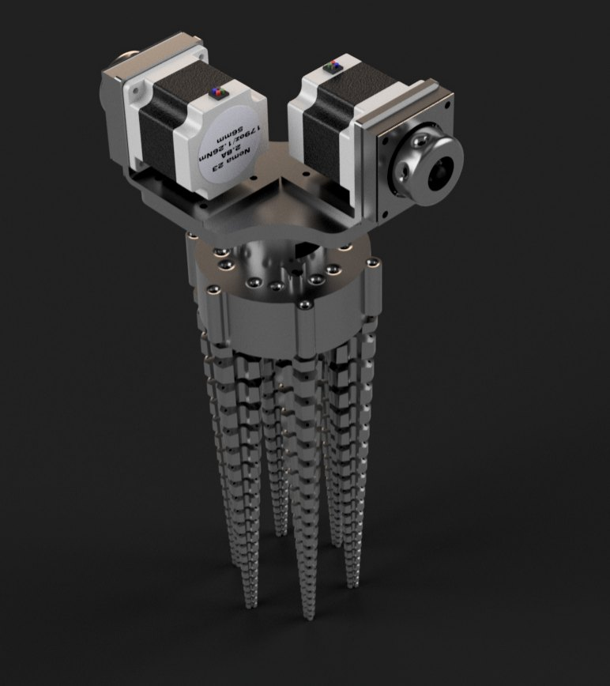

Unlike a typical robotic end effector, the Leviathan uses six 3D-printed TPU tentacles that wrap around and adapt to whatever they grab. Two strings on each tentacle are pulled by a stepper motor to close the grip, and a third string returns the tentacle to its default position. A built-in camera identifies objects and, using the Gemini API, tells the operator how far to move to reach them.

The problem
[What problem does this project solve, and why did it need to exist?]
How it works
[Explain how the design works.]
What I did
[Describe your part: what you designed, built, tested, or programmed.]